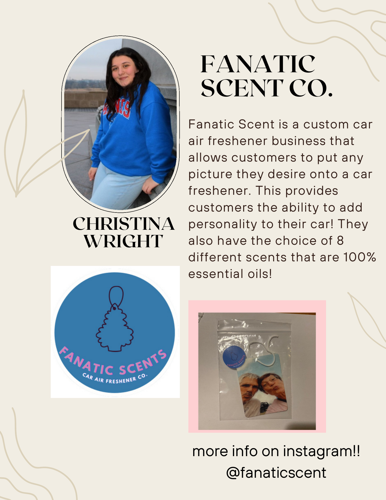
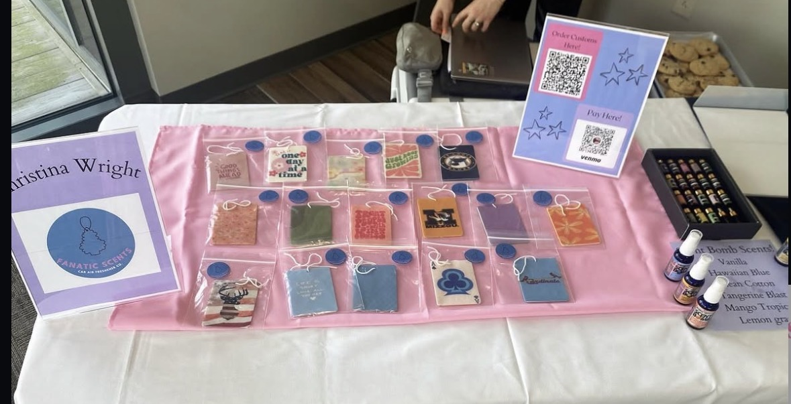

Fanatic Scent Co.
A fully operating small business I launched through a startup program — custom car air fresheners personalized with a customer's own photo, sold through social media and in person at trade shows.

What It Was
Fanatic Scent Co. started as a small business venture through a local startup program, where I served as Chief Marketing Officer. The product: custom car air fresheners that customers personalize with any photo they choose, available in eight scents made from 100% essential oils — a way to add real personality to your car.
I made every air freshener myself using a sublimation printer and heat press, ran the brand's social media, priced the product, and sold in two ways: online through social media and in person at trade show tables.
What I Want You to Notice
This business was profitable — I built it from the ground up, from sourcing materials to pricing to sales strategy, and turned an initial investment into a working, growing small business. It's proof I can take an idea all the way from concept to paying customers.
What I'd do differently: looking back, I'd expand the target market. Everyone needs air fresheners — I'd widen who I was marketing to instead of narrowing in too early.
By the Numbers
Part of running Fanatic Scent Co. meant treating it like a real business — tracking exactly what materials cost and building a case for reinvestment. I started with a $500 budget to buy a sublimation printer, ink, paper, a heat press, essential oils, and packaging supplies. As the business grew, I requested $458 in additional funding — covering more ink, paper, packaging, and a larger sublimation press — to keep up with demand.
The plan going forward: continue growing Fanatic Scent Co. and maintain the business once I move to college — treating it as a long-term venture, not just a class project.
At the Trade Show
